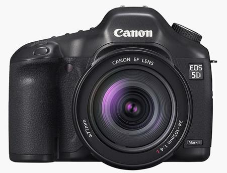

Canon Strikes Back Against The Nikon D90

Two weeks ago Nikon launched the first DSLR with video capabilities. But today Canon unveiled the 5D Mark II, a worthy competitor. The 21.1 megapixel successor to the 5D includes the ability to shoot 30 progressive frames per second with 1,080 vertical lines per frame. Video nerds call this 1080p30. What this means for the rest of us is the 5D Mark II becomes an effective HD media acquisition tool for both pictures and video.
Canon has a sample gallery with 8 videos resized for the web. Full resolution video clips from the Canon 5D Mark II are also available for download.
The table below outlines the video differences between the two cameras.
| Canon 5D Mark II | Nikon D90 | |
|---|---|---|
| Resolution | 1920×1080 | 1280×720 |
| Frame Rate | 30p | 24p |
| Video Format | MOV(H.264) | AVI (MJPEG) |
| Max Recording at full resolution | 12 minutes | 5 minutes |
| Microphone Input | 1/8" mono jack | None |
The biggest thing that makes the 5D Mark II better for video over the D90 is the microphone input. The mic input is big for people that want to record sound from something other than the on board microphone. It might not be an XLR input, which all of the professional gear uses, but it is still nice to have the option.
While most prosumer media gurus will be excited about the 1080p abilities of the Canon 5D Mark II, indy filmmakers like Stu Maschwitz are adamantly upset about the lack of 24p. Shooting video at 24 frames per second produces a look that is more filmic and less harsh compared to the TV standard 30 frames per second as well as making it easier to transfer to film for cinema distribution. I see Canon targeting the 5D Mark II video features at the web video crowd who want to capture the best photos and videos from a single device. This is more like TV news gathering than artsy, indy filmmakers.
But I see no reason why Canon couldn’t introduce a new firmware update that gives a new option for 24p recording since it is certainly feasible technically.
The new camera is set to go on sale at the end of November for $2,700. The Nikon D90 will hit the market at the end of September for less than $1,300. Until then you can read about every single minute detail from DPReview’s hands on preview of both the Canon 5D Mark II and the Nikon D90.